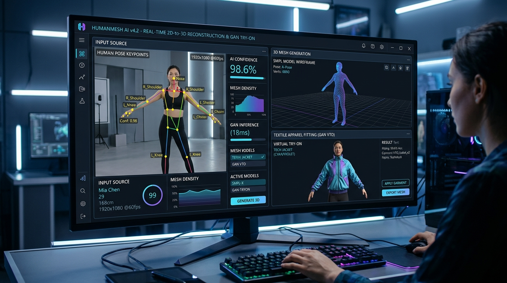
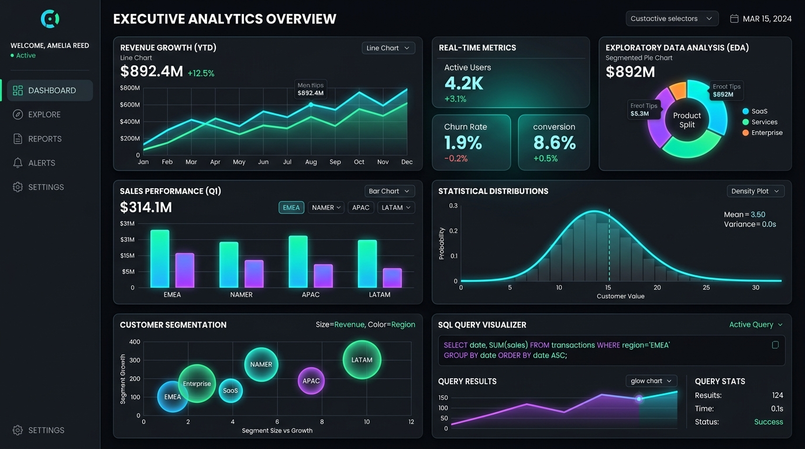
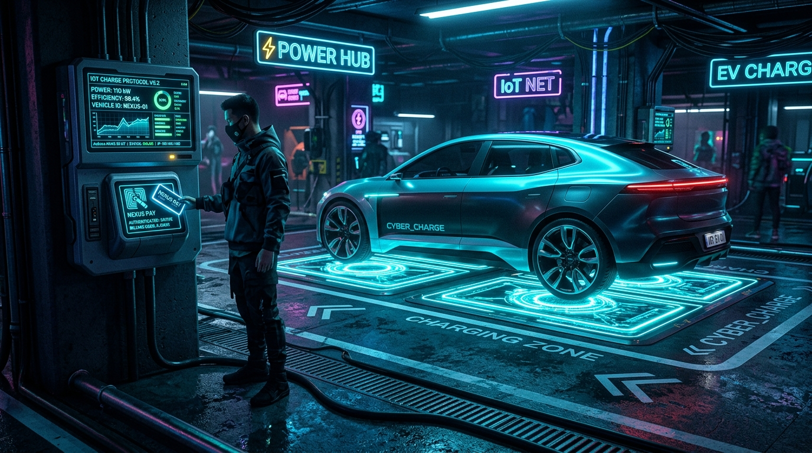

Hi, I'm Ayesha Nikhath S
Data Analyst and AI/ML professional combining robust deep learning pipelines with enterprise backend data analytics. Experienced in building 2D-to-3D human reconstruction, GAN-driven virtual try-on systems, exploratory data analysis (EDA), and scalable SQL workflows.
Bridging Data Analytics & Computer Vision
Transforming raw data into actionable intelligence and building computer vision systems that solve real-world industry challenges.
Computer Vision & AI
Hands-on mastery in building 2D-to-3D human mesh reconstruction, video frame extraction pipelines with OpenCV & NumPy, and generative image-to-image GAN models for virtual try-on.
- SMPL 3D parametric human body modeling
- Pose estimation and keypoint detection
- Convolutional Neural Networks (CNNs) & PyTorch
Data Analytics & Business Intelligence
Passionate about discovering patterns in complex datasets. Skilled in end-to-end data cleaning, exploratory data analysis (EDA), statistical evaluation, and interactive executive dashboards.
- Advanced SQL data validation & ETL workflows
- Power BI, Tableau, and Excel reporting
- Pandas & NumPy automated data preprocessing
Full-Stack & Systems Support
Experienced in digital transformation, ERP backend database troubleshooting, SLA-driven ticketing, and integrating machine learning pipelines with full-stack applications.
- ERP backend support & transaction validation
- REST APIs, HTML/CSS/JavaScript, React.js
- Incident triage, debugging, & workflow automation
Experience the AI & Analytics Workflows
Interactive real-time simulations based on Ayesha's production implementations at Maskan Technologies and Tech Avant Garde.
Simulation Parameters
Anthropometric Extracted Metrics
Pipeline Architecture Highlights:
1. Video frames parsed with OpenCV & NumPy → 2. 2D keypoints extracted via CNN → 3. Fitted to SMPL 3D parametric human body mesh → 4. Anthropometric sizing derived via Pandas & SQL → 5. Garment mapped via GAN image-to-image synthesis.
SQL Query & EDA Dataset
Select a scenario to run analytics queries across ERP backend data and ML validation metrics.
SELECT
DATE_TRUNC('month', created_at) AS month,
COUNT(DISTINCT student_id) AS active_students,
ROUND(AVG(completion_rate), 2) AS avg_completion_pct,
SUM(CASE WHEN status = 'churned' THEN 1 ELSE 0 END) AS churn_count
FROM edtech_erp_platform.user_events
GROUP BY 1 ORDER BY 1 ASC;Summary Telemetry
Technical Skill Matrix
Curated toolkit spanning Artificial Intelligence, Machine Learning, Data Analytics, Query Languages, and Web Technologies.
Python
Core Programming & AI WorkflowsPandas, NumPy, OpenCV, PyTorch, model building, automated data pipelines.
SQL
Relational Databases & ERP QueriesComplex queries, joins, aggregations, data extraction, validation, and ETL.
OpenCV & Computer Vision
Image & Video ProcessingVideo frame extraction, multi-view datasets, feature detection, image preprocessing.
PyTorch & Deep Learning
Neural Architectures & SMPL ModelsCNNs, 3D human reconstruction, SMPL parametric models, model optimization.
Data Analytics & EDA
Exploratory Analysis & PreprocessingData cleaning, outlier detection, hypothesis testing, feature engineering.
Power BI & Tableau
Executive Dashboards & BI ReportingInteractive dashboarding, KPI telemetry, automated management reporting.
GANs & Image Synthesis
Generative Adversarial NetworksImage-to-image translation, virtual apparel draping, model evaluation.
Core Java
OOP & Algorithmic FoundationsData structures, object-oriented design, algorithm design, backend logic.
Pandas, NumPy, Scikit-Learn
Scientific Python StackSupervised & unsupervised learning, matrix operations, statistical transformations.
HTML5, CSS3, JS & React.js
Full-Stack Web DevelopmentResponsive UIs, interactive dashboards, REST API integration, frontend state.
Git & GitHub
Version Control & CollaborationBranching workflows, repository management, collaborative code reviews.
3D Anthropometry & Mesh
Digital Human Body FittingParametric body measurements, apparel size recommendation algorithms.
Professional Experience
A track record of high-impact contributions across EdTech platforms, AI innovation labs, and enterprise systems.
Technical Support Executive
21K School, Bangalore
Supporting mission-critical technical operations, troubleshooting, and platform stability for a leading EdTech online education ecosystem.
- Managing end-to-end technical incident triage and operational support for real-time online learning platforms.
- Diagnosing and resolving system bottlenecks, authentication issues, and user workflow blockers to ensure high service availability.
- Collaborating with engineering teams to document bug patterns and optimize platform usability.
AI Developer
Maskan Technologies, Bangalore
Pioneered end-to-end AI/ML solutions in Python for textile and fashion tech, engineering groundbreaking 2D-to-3D Human Body Reconstruction and GAN-based Virtual Try-On systems.
- 2D-to-3D Human Reconstruction: Architected deep learning pipelines using PyTorch, OpenCV, CNN architectures, and SMPL models for photorealistic 3D human body reconstruction from single/multi 2D inputs.
- OpenCV Video Preprocessing: Built an automated preprocessing pipeline with OpenCV & NumPy to extract keyframes and synthesize high-density multi-view datasets, substantially boosting 3D model accuracy.
- 3D Anthropometry Extraction: Extracted precise parametric human body measurements using Pandas, Python, and SQL to calculate exact apparel sizing and fit recommendations.
- GAN Virtual Try-On: Developed image-to-image generative translation models for cloth draping, conducting extensive data preprocessing, validation, and hyperparameter tuning.
- Full-Stack Model Deployment: Integrated deep learning inference APIs into web applications, streamlining full-stack communication and automated testing.
Software Support Engineer
Tech Avant Garde, Bangalore
Contributed to large-scale EdTech & HealthTech digital transformation programs spanning hybrid learning, STEM/STEAM, ERP portals, and fee management systems.
- SQL Backend Analytics: Executed in-depth database queries and transaction auditing to resolve operational bugs and ensure flawless academic/financial data consistency.
- ETL & Data Transformation: Performed large-scale data extraction, cleansing, and normalization to streamline institutional onboarding, client reporting, and backup management.
- Deployment & System Testing: Assisted product teams in regression testing, staging verification, and deployment rollouts for ERP platform updates.
- SLA Management: Resolved L1/L2 support tickets within strict SLA timelines, performing root cause analyses on escalated incident reports.
Featured Engineering Projects
A showcase of production-ready machine learning solutions, data analytics platforms, and intelligent IoT systems.

Computer Vision & AI2D-to-3D Human Reconstruction & GAN Virtual Try-On
Pioneered an end-to-end computer vision pipeline converting 2D camera feeds into SMPL parametric 3D body meshes with automated anthropometric sizing and GAN garment synthesis.

Data Analytics & BIEnterprise ERP Analytics & Executive Dashboard Suite
Comprehensive data analytics, SQL validation, and executive dashboarding suite built to monitor multi-institutional EdTech transactions, attendance trends, and retention rates.

IoT & Embedded SystemsIoT Wireless EV Charging & Automated Billing
Major Engineering Capstone: An intelligent wireless power transmission system for EVs utilizing magnetic resonance coils paired with RFID-based automated payment processing.
Hospital Management & Patient Portal
Full-stack web application engineered to manage electronic health records, doctor appointment scheduling, automated patient billing, and hospital staff directories.
Education & Certifications
Formal computer science engineering degree complemented by specialized professional development programs.
B.E. in Computer Science and Engineering
Brindavan College of Engineering
Visvesvaraya Technological University (VTU) — Bangalore
Core coursework: Data Structures & Algorithms, Database Management Systems (DBMS), Operating Systems, Computer Networks, Machine Learning, and Software Engineering.
Python & Data Science Professional
Konigtronics Pvt Ltd
Sept 2024 – Oct 2024Intensive specialization in Python for scientific computing, statistical analysis, Pandas, NumPy, Scikit-learn, and predictive modeling.
Full Stack Developer Certification
Global Quest Technologies
Feb 2024 – Jun 2024Comprehensive program covering frontend UI engineering, JavaScript/React, relational databases, backend server architectures, and API design.
Let's Build Something Exceptional Together
Whether you are hiring for an AI/ML or Data Analyst role, seeking collaboration on computer vision projects, or discussing data solutions, I'd love to connect!
Send a Direct Message
Messages are sent directly to Ayesha Nikhath S.